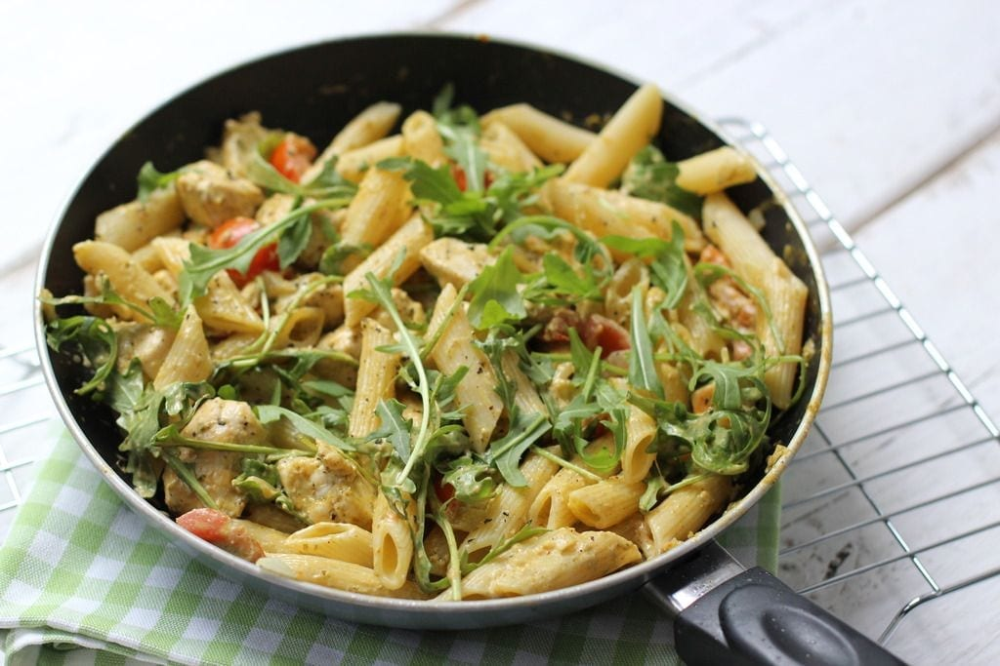

Pasta Pesto

Intro
Dit recept voor pasta kip-pesto is echt ideaal als je weinig tijd of zin hebt om te koken. Het is 1. super makkelijk om te maken, 2. het is heel lekker en 3. het staat in 20-25 minuten op tafel.
Ingredienten
Bereiding
Snijd de kipfilet in stukjes. Breng de kip op smaak met zout, peper en Italiaanse kruiden. Zet een pan water op en kook de pasta volgens de bereidingswijze op het pak. Snipper het uitje en snijd de rode peper en knoflook fijn. Snijd ook de cherrytomaatjes in tweeën of vieren. Giet een scheutje olie in een pan en bak de blokjes kip gaar (circa 4-5 minuten). Voeg vervolgens de ui, rode peper, Italiaanse kruiden, cherrytomaatjes en knoflook toe. Na circa 2 minuten voeg je de pesto en creme fraiche toe en laat je het geheel opwarmen. Serveer de pasta kip-pesto met rucola. Ook super lekker met geroosterde pijnboompitten.
/body>